← Bosh sahifa · Yuqorida — bir xil turkumdagi savollar ketma-ket (yodlash oson bo'lsin uchun), pastda — mavzular bo'yicha xatolaringiz. Savollar asl bo'limlarida ham turibdi. Qizil ramka: o'zingiz xato qilgan savol. Siz «bilaman» degan 5 ta savol shu sahifadan chiqarilgan.
Mundarija — 5 turkum, 6 mavzu
- Ko'k nomli belgi (aholi punkti) va tezlik (6 ta)
- DYHX ruxsati, yuk o'lchamlari va gabaritlari (13 ta)
- Sariq chiziqlar (5 ta)
- Orolcha (3 ta)
- Uzuq-uzuq va uzluksiz yotiq chiziqlar (11 ta)
- Yo'l belgilari (66 ta)
- To'xtash va to'xtab turish (72 ta)
- Burilish, qayrilish, manyovr (56 ta)
- Chorraha va yo'l berish (40 ta)
- Tibbiyot - birinchi yordam (14 ta)
- Tramvay - barcha savollar (47 ta)
Ko'k nomli belgi (aholi punkti) va tezlik — 6 ta
belgi bir xil, savol matni va transport turi o'zgaradi

Bunday yo'l belgisi bilan belgilangan yo'l qismlarida shaharlararo qatnaydigan avtobuslarning qanday eng yuqori tezlikda harakatlanishiga ruxsat etiladi?

Bunday yo'l belgisi o'rnatilgan yo'l qismlarida motosikllarga qanday yuqori tezlik bilan harakatlanishga ruxsat etiladi?

Shunday yo'l belgisi bilan belgilangan yo'l qismlarida shaharlararo bo'lmagan avtobuslarning qanday yuqori tezlik bilan harakatlanishiga ruxsat etiladi?

Shunday yo'l belgisi bo'lgan yo'l qismlarida ruxsat etilgan to'la vazni 3,5t. dan oshmaydigan yuk avtomobillariga qanday eng katta tezlik bilan harakat qilishga ruxsat etiladi?

Tirkamali yengil avtomobillarga yo'lning shunday yo'l belgisi o'rnatilgan qismida qanday eng katta tezlik bilan harakatlanishga ruxsat etiladi?
DYHX ruxsati, yuk o'lchamlari va gabaritlari — 13 ta
ruxsatisiz yurish mumkin bo'lgan o'lcham, uzunlik, balandlik, chiqib turish va xizmat bilan bog'liq holatlar
Agar yo'l-transport hodisasi natijasida hech kim jabrlanmasa, moddiy zarar esa ahamiyatsiz bo'lsa, haydovchilarning o'zlari hodisa ro'y bergan joyni tark etib, DYHXXning eng yaqin yoki IIO idorasiga hodisani qayd qilish uchun bora oladilarmi?
Bir tirkamali avtopoezdning qanday eng katta uzunligida DYHXX ruxsatisiz harakatlanishga yo'l qo'yiladi?
Davlat YHX xizmati ruxsatisiz transport vositasining yuk bilan yoki yuksiz harakatlanishiga qanday yuqori maksimal kenglikda yo'l qo'yiladi?
Davlat YHX xizmatining ruxsatisiz transport vositasining yuk bilan yoki yuksiz qanday yuqori o'lchamdagi balandlik bilan harakatlanishiga yo'l qo'yiladi?
Kunduzgi vaqtda transportning old yoki orqa tomoniga 1 metrdan ortiq chiqib turgan yuk qanday belgilanadi?
Mexanik transport vositalari va uning tirkamalarining egalari texnik holatidan qat'iy nazar; xarid qilgan (olgan) paytdan boshlab shu muddat mobaynida DYHX xizmatida ro'yxatdan o'tkazishlari kerak:
Og'ir vaznli va katta o'lchamli yuklarni tashiyotgan transport vositalarining aholi yashaydigan joylardan tashqarida qanday tezlik bilan harakatlanishiga ruxsat etiladi
Tashilayotgan yuk DYHX xizmatining ruxsatisiz transport vositasi o'lchamlarining orqa nuqtasidan eng katta miqdorda qanday chiqib turishi mumkin?
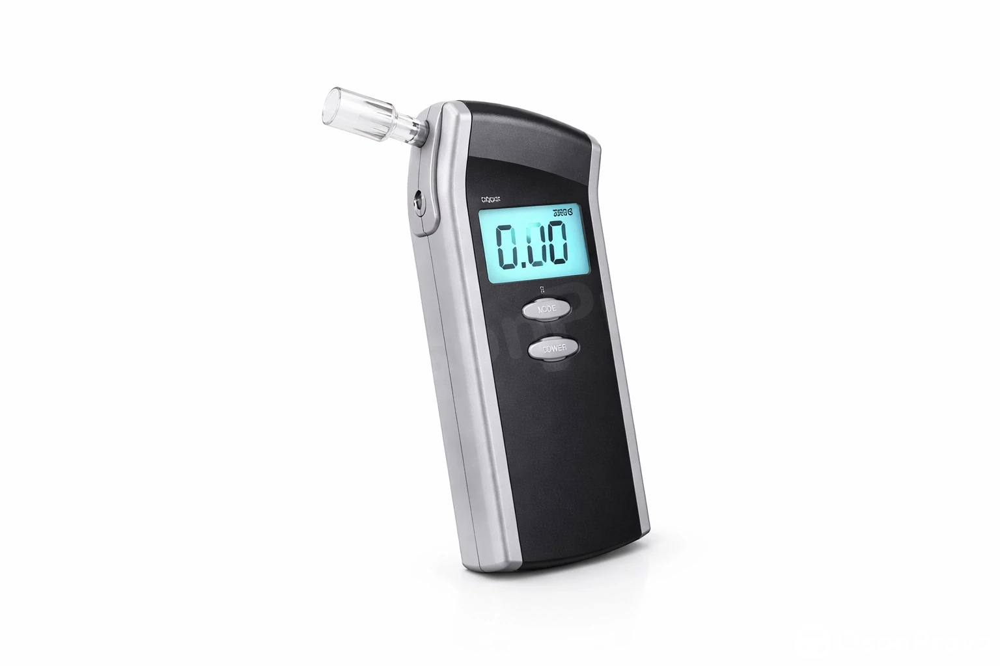
Transport vositasi haydovchisi tomonidan chiqarilgan havodagi etanol bug'lari kontsentratsiyasi qancha miqdorni ko'rsatgan hollarda DYHXX xodimi haydovchiga nisbatan alkogolli ichimlik isteʼmol qilganligi fakti yuzasidan maʼmuriy bayonnoma rasmiylashtiradi?
Velosipedlarda yuk tashilganda gabaritidan bo'yiga va eniga qanchadan ortiq chiqib tursa, yuk tashish taqiqlanadi?
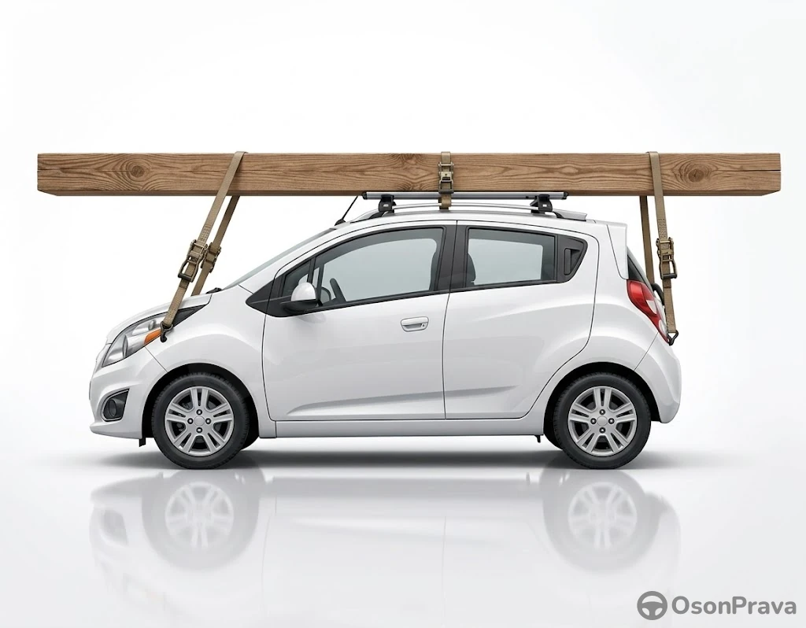
Yengil avtomobilning tom qismiga o'rnatilgan ushbu yuk transport vositasining gabaritlaridan oldi va orqasiga necha metrgacha chiqib turishiga ruxsat etiladi?
Yengil avtomobilning tom qismiga o'rnatilgan yukxonasida yuk tashishdan, yukning uzunligi avtomobilning gabaritidan necha metrdan oshmasa tashishga yo'l qo'yiladi?
Yuk transport vositasining o'lchamlaridan chiqib tursa, kunning qorong'i vaqtida va yetarli ko'rinmaydigan sharoitda qanday belgilanadi?
Sariq chiziqlar — 5 ta
sidirg'a va uzuq-uzuq sariq chiziq, to'xtash taqiqlari

Quyidagi 3.27 "To'xtash taqiqlangan" belgisining amal qilish chegarasi qayerda tugaydi?

"To'xtash taqiqlangan" belgisi bilan birga to'siqning usti bo'ylab uzluksiz sariq chiziq chizilgan joyda yo'lovchilarni tushirishga ruxsat beriladimi?
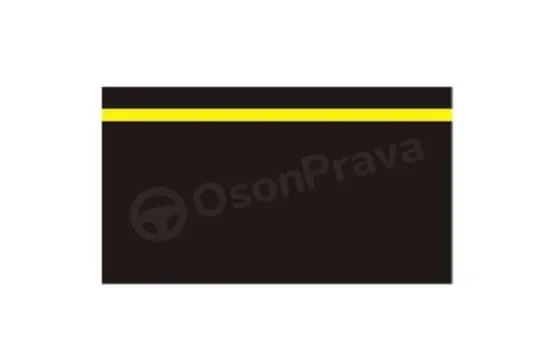
To'xtashni taqiqlovchi joylarni bildiruvchi sidirg'a sariq chiziq qayerda chiziladi?

Yotiq chiziqning uzluksiz sariq chizig'i nimani bildiradi?
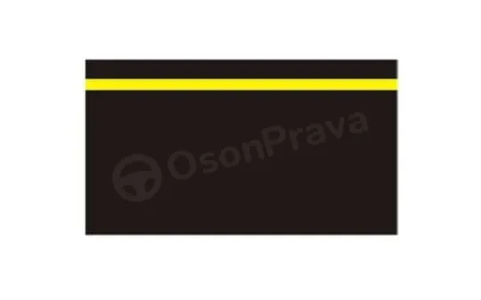
Yotiq uzluksiz sariq chiziq "To'xtash taqiqlangan" belgisi bilan birga to'xtashga ruxsat etadi:
Orolcha — 3 ta
orolcha va unga kirish qoidalari
Agar yo‘l belgilari va chiziqlari boshqa yo‘nalishni ko‘rsatmagan bo‘lsa, haydovchilar ajratuvchi bo‘lagi bo‘lmagan ikki tomonlama harakat tashkil etilgan yo‘llardagi xavfsizlik orolchalari, ustunchalar va yo‘l inshooti qismlari (ko‘prik, yo‘l o‘tkazgich ustunlari va shunga o‘xshashlar)ni qaysi tomondan aylanib o‘tishlari kerak?

Bu yotiq chiziq nimani anglatadi?
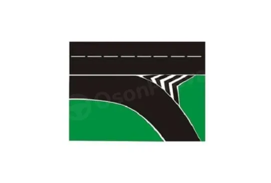
Oq chiziq bilan belgilangan orolchaga kirishga ruxsat etiladimi?
Uzuq-uzuq va uzluksiz yotiq chiziqlar — 11 ta
chiziq turlari va ularni kesib o'tish
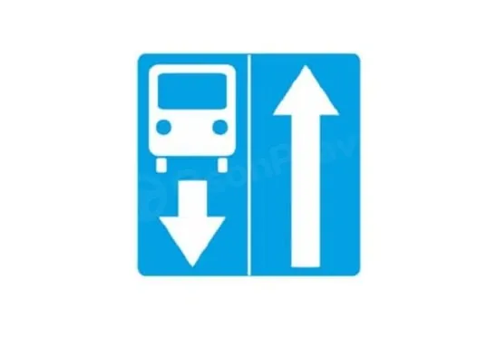
Agar yo'l boshlanishida ushbu belgi turgan bo'lsa, qatnov qismining qarama-qarshi yo'nalishiga o'tish mumkinmi?
Chiziqlar bilan tasmalarga ajratilgan yo'lning qatnov qismida transport vositalarining harakatlanishi qanday amalga oshirilishi kerak?
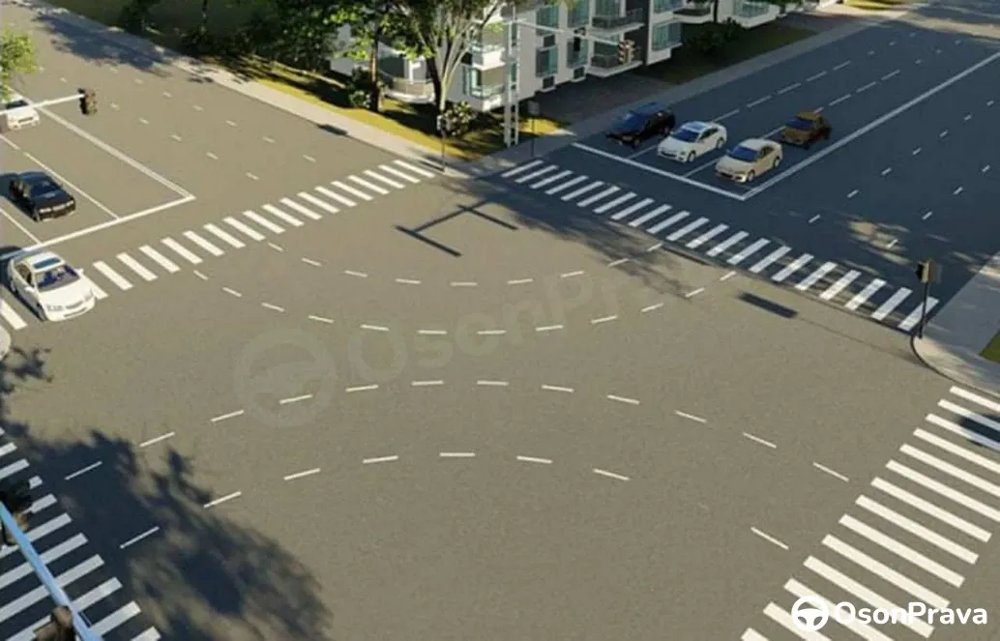
Chorrahadagi uzuq-uzuq chiziqlar nimani bildiradi?

Enli uzuq-uzuq chiziq ko'rinishidagi yotiq chiziq nimani bildiradi?
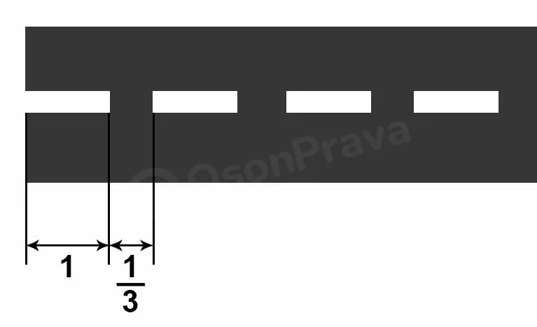
Har bir chiziq uzunligi ular orasidagi masofadan uch barobar katta bo'lgan uzuq-uzuq chiziq bildiradi?

Haydovchiga transport vositalarining to'xtab turish joylari chegarasini bildiradigan uzluksiz chiziqni kesib o'tishga ruxsat etiladimi?

O'ngga burilganda shu belgi bilan belgilangan tasmaga o'tishga ruxsat etiladimi?
Qaysi hollarda yo'lning harakatlanish tasmasini ajratuvchi uzuq-uzuq chiziqni bosib o'tish mumkin?

Reversiv svetoforlar bo'lmaganda yoki ular o'chirib qo'yilganda ikkitali uzuq-uzuq chiziqni kesib o'tishga ruxsat etiladimi?
Yo'lning qarama-qarshi harakat yo'nalishi tomoniga chiqish qachon taqiqlanadi?

Yo'lovchilarni tushirish uchun bu belgi o'rnatilgan tasmada to'xtashga ruxsat etiladimi?
Yo'l belgilari — 66 ta
xatolaringiz ichidan yo'l belgilariga oid savollar
Yo'l-transport hodisasiga daxldor bo'lgan haydovchilar birinchi navbatda bajarishlari shart:
Qayta tizilish deb nimaga aytiladi?
Harakat tezligini tanlashda haydovchiga taqiqlanadi?
Relssiz transport vositalarining harakatlanishi uchun tasmalar soni qanday aniqlanadi?
N2; N3; O3; O4; M2; M3 toifadagi avtotransport vositalarining orqa devoriga yozilishi kerak?

Belgi ostidagi qo'shimcha axborot belgisi nimani anglatadi?

Ushbu yotiq chiziqlardan qaysi biri belgilangan yo'nalishdagi transport vositalari uchun to'xtashga ruxsat beradi?

Bu "to'xtash" yotiq chiziq qaysi yo'l belgisi bilan qo'llaniladi?

Qaysi belgi yo'lning xavfli burilishiga yaqinlashayotgani haqida ogohlantiradi?

Ko'rsatilgan belgilardan qaysi biri bolalar deb nomlanadi?

Qaysi belgi haydovchiga kesib o'tilayotgan yo'lda harakatlanayotgan transport vositalariga yo'l berish lozimligini bildiradi?

Ushbu yo'l belgisi qanday maqsadda qo'llaniladi?

Qaysi yo'l belgilari yo'lning tor qismida haydovchiga ustunlik beradi?

Ushbu qo'shimcha axborot yo'l belgisi bildiradi:

Qaysi belgi ikkinchi darajali yo'l bilan tutashuvni bildiradi?

Ushbu yo'l belgisi qanday nomlanadi:

Ushbu yo‘l belgisi qanday nomlanadi?

Agar tegishli belgilar bilan belgilangan qiyaliklarda yuzma-yuz kelayotgan transportlarning o'tib ketishi qiyin bo'lsa, yo'l berish zarur:
Agar transport vositasida "Tezlik cheklangan" taniqli belgisi o‘rnatilgan bo‘lsa, bu transport vositasining haydovchisiga:
Aholi punktlariga tegishli yo'l harakati qoidalari qayerdan boshlanadi?
Avtomagistralda quyidagilar taqiqlanadi:

Belgi va uning ostidagi qo'shimcha axborot belgisi nima haqida ogohlantiradi?

Belgilangan yo'nalish bo'ylab ketayotgan avtobus haydovchi ushbu sharoitda yo'l berishi kerakmi?

Belgilardan qaysi birining belgilangan yo'nalishdagi transport vositalariga dahli yo'q?

Bu belgida qaysi transport vositalarini quvib o'tishni taqiqlaydi?

Bu belgilardan qaysi biri maktab va maktabgacha ta'lim tashkilotlari oldida o'rnatiladi?

Bu yo'l belgisi qanday nomlanadi?
Chorrahani kesib o'tishda tramvay yo'li bo'ylab harakatlanishga ruxsat etiladimi?
Faqat belgilangan yo'nalishli transport vositalariga qatnov qismida ajratilgan tasmasida boshqa turdagi transport vositalari harakatlanishga ruxsat etiladimi?
Haydovchi yaqinlashib kelayotgan poezdni o'tkazib yuborishi uchun "To'xtash" yotiq chizig'i yoki "To'xtamasdan harakatlanish taqiqlangan" belgisidan qanday masofada to'xtashi kerak?
Kesishma orqali harakatlanish hollarida haydovchi to'xtash chizig'i 2.5 "To'xtamasdan harakatlanish taqiqlangan" yo'l belgisi yoki svetofor bo'lmaganda, o'tib ketayotgan poezdni o'tkazib yuborishga qoida bo'yicha shlagbaumgacha kamida qancha masofa qolganida to'xtash kerak?

Ko'rsatilgan belgilardan qaysilarining talabi bevosita o'rnatilgan joyidan kuchga kiradi?

Ko'rsatilgan qaysi belgilar chapga burilishni taqiqlaydi?

Ko'rsatilgan qaysi belgilar sizga yashash manzilingizga avtomobilda o'tishga ruxsat beradi?

Ko'rsatilgan yo'l belgilaridan qaysi biri taqiqlovchi belgilar ilgari kiritgan barcha cheklovlarni bekor qiladi?

Ko'rsatilgan yo'l belgilarining qaysi birida eng kam tezlikda harakatlanish kerak ?

Mazkur belgi bilan belgilangan hududda qanday cheklanishlar kiritilgan?

Ogohlantiruvchi belgilarni toping
Qanday alomatlar charchash belgilari hisoblanadi?

Qanday transport vositalariga ushbu belgining amal qilishi tatbiq etilmaydi?
Qatnov qismiga bevosita tutashgan trotuar chetida unga to'la yoki qisman chiqish bilan to'xtab turishga ruxsat etiladimi?

Qaysi belgi 50 km/soat kam tezlikda harakatlanishni taqiqlaydi?

Qaysi belgi agar yuk avtomobilni tirkamasi bilan birga ruxsat etilgan to'liq vazni 7 tonnaga teng bo'lsa, tirkamali avtomobillarning harakatlanishini taqiqlaydi?

Qaysi belgi haydovchi xohishiga ko'ra qo'ysa bo'ladi?

Qaysi belgi qarama-qarshi harakatlanishning ustunligini bildiradi?

Qaysi belgi svetoforning (tartibga soluvchining) taqiqlovchi ishorasida transport vositalari to'xtaydigan joyni bildiradi?

Qaysi belgi tartibga solinmagan piyodalar o'tish joyiga yaqinlashayotganlik haqida ogohlantiradi?

Qaysi belgi teng ahamiyatli yo'llar kesishish chorrahasiga yaqinlashib kelayotganlik haqida ogohlantiradi?

Qaysi belgi velosipedchilar va individual harakatlanish vositalari uchun mo'ljallangan tasmani bildiradi?

Qaysi belgida haydovchiga quvib o‘tish taqiqlangan?
Qaysi javobda yo‘l belgilari guruhlarining ketma-ketligi to‘g‘ri ko‘rsatilgan?

Qaysi transport vositalariga bu belgi o'rnatilgan yo'l bo'ylab harakatlanishga ruxsat etilgan?
Qaysi transport vositalarini qatnov qismining chetida ikki qator qo'yish mumkin?

Qaysi transport vositasining haydovchisiga belgida ko'rsatilgan tezlik bilan harakatlanishga ruxsat berilgan?

Qaysi yo'l belgisi barcha transport vositalarining harakatini istisnosiz taqiqlaydi?

Quyidagi 3.24. "yuqori tezlik cheklangan" yo'l belgisining ta'sirini qaysi belgilar bekor qiladi?

Quyidagi belgilardan qaysi biri haydovchini boshqa xavf-xatarlar to'g'risida ogohlantiradi?

Quyidagi belgilardan qaysi biri yengil avtomobillar harakati deb nomlanadi?
Svetofor ishoralari imtiyoz belgilari talablariga zid kelgan hollarda?
Temir yo'l izlarini qayerda kesib o'tishga ruxsat beriladi?
Transport vositasi texnik tavsifnomasida ko'rsatilgan yuqori tezlikdan oshirilishi mumkinmi?

Ushbu belgilardan qaysi biri bir tomonlama harakat tashkil qilingan yo'lning boshida o'rnatiladi?

Ushbu xavflilik belgisi qaysi turdagi moddalarni bildiradi
Yo'l belgilari va chiziqlarining ma'nolari bir-birini inkor etganda haydovchi qaysi biriga rioya qilishi kerak kerak?

Yondosh hududlardan yo‘lga chiqish joylarida yoki yo‘lning dala, o‘rmon yo‘llari va boshqa doimiy harakatlanish, o‘tib ketish uchun mo‘ljallanmagan yo‘llar bilan kesishgan (tutashgan) joylarida, ularning oldida tegishli belgilar o‘rnatilmagan bo‘lsa, bu belgilarning ta’siri yo‘qoladimi?
Yuk tashish taqiqlanadi, agar:
To'xtash va to'xtab turish — 72 ta
xatolaringiz ichidan to'xtash/to'xtab turishga oid savollar
Qaysi joylarda transport vositalariga qatnov qismining chetiga burchak ostida to'xtab turishga ruxsat etiladi?
To'xtab turish tormoz tizimi N toifadagi avtotransport vositalarini aslahalangan holatda qanday qiyalikda ushlab tura olmasa foydalanish taqiqlanadi?
To'xtab turish tormoz tizimi qanchadan kam bo'lgan qiyalikda M toifadagi avtotransport vositalarini harakatsiz holatda ushlab tura olmasa, bu avtotransport vositalaridan foydalanish taqiqlanadi?
Yo'l-transport hodisasiga daxldor bo'lgan haydovchilar birinchi navbatda bajarishlari shart:
Tormoz yo'li deb nimaga aytiladi?
To'siq deb nimaga aytiladi?
To‘xtash deb nimaga aytiladi?
To'xtash yo'li deb nimaga aytiladi?
Qanday hollarda to'xtab turish taqiqlanadi?
Kesishayotgan qatnov qismi chetiga qanchadan kam masofa qolganda to'xtash taqiqlanadi?
Velosiped yo'lkasi bilan kesishuvga qanchadan kam masofa qolganda to'xtash taqiqlanadi?

Ko‘rsatilgan joyda qizil avtomobilga to‘xtashga ruxsat etiladimi?

Shu joyda to'xtab turishga ruxsat etiladimi?

Sizga ko'rsatilgan joyda yengil avtomobilda to'xtashga ruxsat etiladimi?

Ushbu ko'rsatilgan joyda to'xtashga ruxsat etiladimi?

Qaysi transport vositasining haydovchisi to'xtab turish qoidasini buzdi?

Qaysi transport vositasining haydovchisi to'xtash qoidasini buzdi?
Ushbu yotiq chiziqlardan qaysi biri belgilangan yo'nalishdagi transport vositalari uchun to'xtashga ruxsat beradi?
Bu "to'xtash" yotiq chiziq qaysi yo'l belgisi bilan qo'llaniladi?

To'xtab turish qoidasini kim buzdi?

Qaysi avtomobil haydovchisiga to'xtashga ruxsat etilgan?

Qaysi haydovchi to'xtab turish qoidasini buzmadi?
Ushbu yo'l belgisi qanday maqsadda qo'llaniladi?
Ushbu qo'shimcha axborot yo'l belgisi bildiradi:
Agar avtomobil antiblokirovkali (ABS) tormoz tizimi bilan jihozlangan bo'lsa keskin tormoz berishni qanday amalga oshirish kerak?
Agar piyodalar o'tish joyida tirbandlik vujudga kelib, haydovchini piyodalar o'tish joyida to'xtashga majbur qilsa, haydovchi majbur:
Aholi punktlarida relssiz transport vositalariga, agar bir yo'nalishda uchta va undan ortiq harakatlanish tasmasi bo'lganda, qaysi tasmadan harakatlanishga ruxsat etiladi? (yuk avtomobillari hisobga kirmaydi)

Aholi punktlaridan tashqarida qaysi avtomobil to‘xtab turish qoidasini buzmadi?
Avtomagistralda quyidagilar taqiqlanadi:

Balandlikda yo'l chetida to'siq mavjud bo'lganda to'xtagan avtomobilni joyidan g'ildirab ketishini oldini olish uchun oldingi g'ildiraklarni burib qo'yish usuli qaysi javobda to'g'ri ko'rsatilgan:
Bekat maydonchalaridan harakatlanish yo'nalishi bo'ylab qanchadan kam masofada (yetmasdan va o'tib ketib) to'xtash va to'xtab turish taqiqlanadi?
Belgi va uning ostidagi qo'shimcha axborot belgisi nima haqida ogohlantiradi?

Bu joyda to'xtash mumkinmi?
Chap qo'lni yonga cho'zish yoki o'ng qo'lni tirsakdan to'g'ri burchak ostida bukib, yuqoriga ko'tarish ishorasi nimani bildiradi?
Chorraha — bu ...

Haydovchi qaysi rasmda qoidani buzmay to'xtagan?
Haydovchi to'xtash oldidan ogohlantiruvchi ishora berishga qachon majbur?
Haydovchi yaqinlashib kelayotgan poezdni o'tkazib yuborishi uchun "To'xtash" yotiq chizig'i yoki "To'xtamasdan harakatlanish taqiqlangan" belgisidan qanday masofada to'xtashi kerak?
Haydovchining o'zi aniqlay oladigan harakatlanish uchun to'sqinlik yoki xavf tug'ilganda qanday choralar ko'rishi kerak?
Jabrlanuvchiga uning yurak faoliyati yoki nafas olishi to'xtaganda qanday ketma-ketlikda birinchi yordam ko'rsatish zarur?
Jihozlangan bekatlari bo'lmagan tramvay to'xtash joylarida unga chiqish uchun piyodalarga qachon qatnov qismiga chiqishga ruxsat etiladi?
Kesishma orqali harakatlanish hollarida haydovchi to'xtash chizig'i 2.5 "To'xtamasdan harakatlanish taqiqlangan" yo'l belgisi yoki svetofor bo'lmaganda, o'tib ketayotgan poezdni o'tkazib yuborishga qoida bo'yicha shlagbaumgacha kamida qancha masofa qolganida to'xtash kerak?
Mazkur belgi bilan belgilangan hududda qanday cheklanishlar kiritilgan?

Motosiklning haydovchisi qanday holda chapga to'g'ri burildi?
Piyodalar to'xtab turgan avtobus va trolleybusning qaysi tomonidan yo'lni kesib o'tishlari kerak?
Qatnov qismiga bevosita tutashgan trotuar chetida unga to'la yoki qisman chiqish bilan to'xtab turishga ruxsat etiladimi?

Qaysi avtomobil haydovchisi svetoforning taqiqlovchi ishorasida to‘g‘ri to‘xtadi?

Qaysi avtomobil to'xtab turishga to'g'ri qo'yilgan?

Qaysi avtomobilning haydovchisi to'xtab turish qoidalarini buzmadi?

Qaysi avtomobilning haydovchisi to'xtab turish qoidalarini buzmadi?
Qaysi belgi svetoforning (tartibga soluvchining) taqiqlovchi ishorasida transport vositalari to'xtaydigan joyni bildiradi?

Qaysi haydovchi to'xtash qoidasini buzdi?
Qaysi holatda siz majburiy to'xtashni amalga oshirasiz?

Qaysi rasmdagi haydovchilar to'xtash qoidasini buzdilar?

Qaysi transport vositalariga to'xtab turishga ruxsat etilgan?

Qaysi transport vositasining haydovchisi aholi punktlarida to‘xtash qoidasini buzmoqda?

Qizil avtomobilning haydovchisi, yalt-yalt etuvchi chiroq-mayoqcha va maxsus tovushli ishora yoqilgan transport vositasiga yaqinlashib kelayotganda nima qilishi kerak?
Quruq yo'lda darhol to'xtash uchun nima qilish lozim?
Quyidagi izoh qaysi atamaga tegishli? Texnik nuqson, tashilayotgan yuk, haydovchi va yo'lovchining holati, yo'ldagi biror to'siq tufayli xavf yuzaga kelganda yoxud ob-havo sharoitiga bog'liq holda transport vositasi harakatini to'xtatish
"Reaksiya vaqti" tushunchasi nimani bildiradi?

Siz qizil avtomobilda to‘xtab turish joyidan chiqyapsiz, boshqa transport vositasi bilan yo‘llaringiz kesishdi, ushbu holatda qanday harakat qilishingiz kerak?
Temir yo'l kesishmasi oldida to'xtagandan keyin harakatni boshlashdan oldin haydovchi:
Tormoz yo'li deganda nimani tushunasiz?

To'xtagan transport vositasi bilan yotiq sidirg'a chiziq orasidagi masofa qancha bo'lganida to'xtash taqiqlanadi?

To'xtash qoidasini qaysi transport haydovchisi buzdi?
Transport vositalarining qayrilib olish joylarida va unga yetmasdan yoki o'tib qanchadan kam masofada to'xtashi taqiqlanadi?
Transport vositalarining temir yo'l kesishmasiga qancha masofadan yaqinroqda to'xtab turishlari taqiqlanadi?
Transport vositasi qiyalikda joyidan qo'zg'alishda to'xtab turish tormoz dastagini qay vaqtda tushirishni boshlash kerak?

Tyagach haydovchisi nima qilishi kerak?
Uzunasiga ketgan sidirg'a chizig'i bilan to'xtagan transport vositalari o'rtasidagi masofa quyidagidan kam bo'lgan joylarda transport vositalarining to'xtashi va to'xtab turishi taqiqlanadi:
Yo'l yoqasi mavjud bo'lganda haydovchi transport vositasini qayerda to'xtatishi kerak?

Yo'lovchilarni tushirish uchun qaysi transport vositalari to'g'ri to'xtadi?
Burilish, qayrilish, manyovr — 56 ta
xatolaringiz ichidan manyovrga oid savollar
Qayrilish taqiqlanadi:
Qayta tizilish deb nimaga aytiladi?
Quvib o'tishni boshlashdan oldin haydovchi shunga ishonch hosil qilishi kerakki:
Harakat tezligi 40 km/soatdan oshmaydigan transport vositasiga qatnov qismining o‘ng qatoridan chiqishga qachon ruxsat etiladi?

Ko'rsatilgan qaysi yo'nalishga harakatlanishga ruxsat etiladi?

Qaysi yo'nalishlarga harakatlanishga ruxsat etiladi?

Qizil avtomobil haydovchisi qaysi yo'nalishlarda harakatlanishiga ruxsat berilgan?

Qizil avtomobilga qaysi yo'nalishlar bo'yicha harakatlanishga ruxsat etiladi?

Ushbu transport vositasi qaysi yo'nalishda harakatlanishiga ruxsat etiladi?

Ushbu transport vositasiga chorraha orqali qaysi yo'nalishlar bo'yicha harakatlanishga ruxsat etiladi?

Yuk avtomobiliga qaysi yo‘nalishlar bo‘yicha harakatlanishga ruxsat etiladi?
Qaysi belgi yo'lning xavfli burilishiga yaqinlashayotgani haqida ogohlantiradi?

Qaysi avtomobil haydovchisiga burilishga ruxsat etilgan?

Qaysi yo‘nalishda qayrilib olishga ruxsat beradi?

Ushbu tik chiziq nimani bildiradi?

Avtomobil haydovchisi qaysi yo'nalish bo'yicha to'g'ri burilmoqda?

To'liq vazni 3.5 tonnadan ortiq bo'lgan yuk avtomobilining qaysi yo'nalishlarda harakatlanishiga ruxsat etiladi?
Agar siz oldinda harakatlanayotgan avtomobilni quvib o'tishga chiqsangiz, ko'rsatilgan hollarning qaysi birida tovush ishorasi berish maqsadga muvofiq?
Aholi punktlarida relssiz transport vositalariga, agar bir yo'nalishda uchta va undan ortiq harakatlanish tasmasi bo'lganda, qaysi tasmadan harakatlanishga ruxsat etiladi? (yuk avtomobillari hisobga kirmaydi)
Aholi yashaydigan yo'llardan tashqarida yo'lning qatnov qismida haydovchilar transport vositalarini qayerda harakatlantirishlari kerak?
Avtomagistralda quyidagilar taqiqlanadi:
Avtomobil haydovchisi uni boshqa transport vositalari quvib o'tayotganda qanday harakat qilishi kerak?

Bir vaqtda qayrilishda qaysi transport vositasi yo'l berishi kerak?
Bir yo'nalishda uch va undan ortiq tasmali har qanday yo'lda yuk avtomobillariga chetki chap qatorni egallashga ruxsat etiladi:
Burilish vaqtida qatnov qismining kesishmasidan chiqishda transport vositasi qayerda bo'lmasligi kerak?
Chap qo'lni yonga cho'zish yoki o'ng qo'lni tirsakdan to'g'ri burchak ostida bukib, yuqoriga ko'tarish ishorasi nimani bildiradi?
Chapga burilayotgan haydovchi kesishayotgan yo'lning qatnov qismidan o'tayotgan piyodalarga yo'l berishi kerakmi?

Chapga burilayotgan sariq avtomobil haydovchisi qaysi tasmalarni egallashi kerak?
Hamma tasmalar band bo'lgan serqatnov harakatlanish vaqtida qayrilib olishga ruxsat beriladimi?

Haydovchi chapga burilishda qaysi yo'nalish bo'yicha qoidani buzmoqda?
Haydovchi harakatlanishni boshlashidan oldin qanday amallarni bajarishi kerak?
Haydovchi qayta tizilishdan va harakatlanish yo'nalishini o'zgartirishdan oldin nima qilishi zarur?
Ko'rsatilgan qaysi belgilar chapga burilishni taqiqlaydi?

Mazkur tik chiziqlar nimani anglatadi?
Motosiklning haydovchisi qanday holda chapga to'g'ri burildi?

Qanday holda markazdan qochirma kuch burilishda kamayadi?

Qaysi avtomobil chorrahada burilish qoidasini buzdi?

Qaysi avtomobil haydovchisi qoidani buzib hovliga burildi?

Qaysi yo'nalish bo‘yicha chapga burilishga ruxsat etiladi?

Qaysi yo‘nalishlarda sizga harakatni davom ettirishga ruxsat etiladi?
Qizil avtomobilning haydovchisi, yalt-yalt etuvchi chiroq-mayoqcha va maxsus tovushli ishora yoqilgan transport vositasiga yaqinlashib kelayotganda nima qilishi kerak?
Quvib o'tishni bajarayotganda chapga burilishni ko'rsatuvchi chiroqni qachon o'chirishingiz kerak?

Rulda o'rganuvchi bo'lsa, qaysi tomonga harakatlanishga ruxsat beriladi?
Ruxsat etilgan to'la vazni 3,5 t dan kam bo'lgan yuk avtomobilining haydovchisiga avtomagistrallarda nima taqiqlangan?
Sanab o'tilgan hollarning qay birida qatnov qismining o'ng chetidan yoki yo'lning o'ng yoqasidan qayrilishga ruxsat etiladi?
Sekinlashish tasmasi bo'lgan yo'llarda burilmoqchi bo'lgan haydovchi qachon tezlikni kamaytirishi lozim?
Sirpanchiq yo'lda tormozlardan qanday foydalanish kerak?
Transport vositalarining qayrilib olish joylarida va unga yetmasdan yoki o'tib qanchadan kam masofada to'xtashi taqiqlanadi?
Tyagach haydovchisi nima qilishi kerak?

Ushbu chorrahada haydovchiga orqaga harakatlanib ko'rsatilgan manyovrni bajarishga ruxsat etiladimi?

Ushbu ko'rsatilgan vaziyatda sizga hovliga orqa bilan kirib qayrilib olishga ruxsat beriladimi?
Yengil avtomobil tirkamasi burilishda qanday trayektoriya bo'yicha harakatlanadi?
Yo'l burilishlarida avtomobilning markazdan qochirma kuchi qanday hollarda oshadi?
Yo'lning chapga burilishiga yaqinlashganingizda, u o'ylaganingizdan ko'ra ancha keskinroq bo'lib chiqsa, Siz
Yo'lning keskin burilishida yuzaga keladigan sirpanishning oldini olish uchun haydovchi nima qilishi kerak?
Yotiq chiziqlarning sidirg'a chizig'ini bosib o'tishga ruxsat etiladimi?
Chorraha va yo'l berish — 40 ta
xatolaringiz ichidan chorrahada o'tish tartibiga oid savollar
Qayrilish taqiqlanadi:
Miltillovchi sariq ishorali svetofor:

Chorrahadan oxirgi bo'lib qaysi transport vositasi kesib o'tadi?

Chorrahadan uchinchi bo'lib qaysi avtomobil kesib o'tadi:

Chorrahani ikkinchi bo'lib kesib o'tadi:

Chorrahani ikkinchi bo'lib kesib o'tadi:

Chorrahani ikkinchi bo'lib kim kesib o'tadi?

Chorrahadan qaysi yo‘nalishda harakatlanishingizga ruxsat berilgan?
Ushbu transport vositasiga chorraha orqali qaysi yo'nalishlar bo'yicha harakatlanishga ruxsat etiladi?

Avtomobillar chorrahani quyidagi tartibda kesib o'tadilar:

Transport vositalari chorrahadan quyidagi tartibda o'tadilar:

Transport vositalari chorrahani quyidagi tartibda kesib o'tadilar:

Transport vositalari chorrahani quyidagi tartibda kesib o'tadilar:

Qizil avtomobil chorrahani kesib o'tadi:

Qizil avtomobil chorrahani nechanchi bo'lib kesib o'tadi?

Sariq avtomobil chorrahani nechanchi bo'lib kesib o'tadi?
Qaysi belgi haydovchiga kesib o'tilayotgan yo'lda harakatlanayotgan transport vositalariga yo'l berish lozimligini bildiradi?
Ushbu tik chiziq nimani bildiradi?
Agar biror-bir to'siq sababli qarama-qarshi yo'nalishlarda harakatlanish qiyin bo'lsa kim yo'l berishi kerak?
Agar tegishli belgilar bilan belgilangan qiyaliklarda yuzma-yuz kelayotgan transportlarning o'tib ketishi qiyin bo'lsa, yo'l berish zarur:
Aylanma harakatlanish chorrahasida...
Belgilangan yo'nalish bo'ylab ketayotgan avtobus haydovchi ushbu sharoitda yo'l berishi kerakmi?
Bir vaqtda qayrilishda qaysi transport vositasi yo'l berishi kerak?
Chapga burilayotgan haydovchi kesishayotgan yo'lning qatnov qismidan o'tayotgan piyodalarga yo'l berishi kerakmi?
Chorraha — bu ...
Chorraha qismida kesib o'tgan yo'lga nisbatan asosiy bo'lgan yo'lda transport vositalarini quvib o'tishga ruxsat beriladimi?
Chorrahani kesib o'tishda tramvay yo'li bo'ylab harakatlanishga ruxsat etiladimi?
Hamma tasmalar band bo'lgan serqatnov harakatlanish vaqtida qayrilib olishga ruxsat beriladimi?

Jamoat transporti bekatidan tashqarida yo'l chetidan qo'zg'alayotgan yo'nalishli transport vositasiga yo'l berishingiz kerakmi?

Mazkur chiziq nimani bildiradi?
Motosiklning haydovchisi qanday holda chapga to'g'ri burildi?
Piyodalar yo'lning qatnov qismini qayerlaridan kesib o'tishlari kerak ?
Qaysi avtomobil chorrahada burilish qoidasini buzdi?
Qaysi belgi teng ahamiyatli yo'llar kesishish chorrahasiga yaqinlashib kelayotganlik haqida ogohlantiradi?
Qaysi holatda siz majburiy to'xtashni amalga oshirasiz?

Qizil avtomobilning haydovchisi:
Qizil avtomobilning haydovchisi, yalt-yalt etuvchi chiroq-mayoqcha va maxsus tovushli ishora yoqilgan transport vositasiga yaqinlashib kelayotganda nima qilishi kerak?
Sanab o'tilgan hollarning qay birida qatnov qismining o'ng chetidan yoki yo'lning o'ng yoqasidan qayrilishga ruxsat etiladi?
Siz qizil avtomobilda to‘xtab turish joyidan chiqyapsiz, boshqa transport vositasi bilan yo‘llaringiz kesishdi, ushbu holatda qanday harakat qilishingiz kerak?
Ushbu chorrahada haydovchiga orqaga harakatlanib ko'rsatilgan manyovrni bajarishga ruxsat etiladimi?
Tibbiyot - birinchi yordam — 14 ta
xatolaringiz ichidan tibbiyotga oid savollar
Yo'l-transport hodisasiga daxldor bo'lgan haydovchilar birinchi navbatda bajarishlari shart:
Arterial qon kelish alomatlarini ko'rsating
Venoz qon ketish alomatlarini ko'rsating:
Agar jonlantirishni (reanimatsiyani) 2 kishi bir vaqtda olib borganda yurakni bilvosita massaj qilish va sun'iy nafas oldirish qanday bajariladi?
Benzin bug'idan zaharlanishning alomatlari qanday?
Bosh miya jarohatlanganda, miya chayqalganda yoki bo'yin qismi jarohatlanganda birinchi yordam ko'rsatish:
Jabrlanuvchiga uning yurak faoliyati yoki nafas olishi to'xtaganda qanday ketma-ketlikda birinchi yordam ko'rsatish zarur?
Qo'l jarohatlanganda jabrlanuvchining ko'ylagi, kiyimi qanday yechilsa to'g'ri bo'ladi?
Qo'l jarohatlanganda kiyim qanday tartibda kiygiziladi?
Qo'l-oyoq uchlari (tirsakdan past qismi, boldir) sinishida transport shinalari yoki ularni qo'lda yasash uchun vositalar bo'lmasa birinchi tibbiy yordam qanday ko'rsatiladi?
Qorin bo'shlig'i jarohatlangan odamga ovqat, suv, dori-darmon berishi mumkinmi?
Qornidan yopiq jarohat olgan jabrlanuvchi qanday tashiladi?
Shikastlangan kishining o'mrov suyagi singanda nima qilish kerak?
Suyak singanda qotirib bog'lash uchun nimadan shina sifatida foydalanish eng qulay?
Tramvay - barcha savollar — 47 ta
bazadagi barcha tramvay savollari (faqat xatolaringiz emas)
Sanab o'tilganlardan qaysi joylarda transport vositalarining to'xtashi va to'xtab turishi taqiqlanadi?

Chorrahadan ikkinchi bo'lib kim o'tadi?

Chorrahadan ikkinchi bo'lib qaysi transport vositasi kesib o'tadi?
Chorrahani ikkinchi bo'lib kesib o'tadi:

Qaysi transport vositasining haydovchisi harakatlanishda imtiyoziga ega?

Qaysi transport vositasining haydovchisi yo'l berishi kerak?

Qaysi transport vositasining haydovchisi yo'l berishi kerak?

Transport vositalari chorrahadan quyidagi tartibda o'tadilar:
Transport vositalari chorrahadan quyidagi tartibda o'tadilar:

Transport vositalari chorrahadan quyidagi tartibda o'tadilar

Transport vositalari chorrahadan quyidagi tartibda o'tadilar:

Transport vositalari chorrahadan quyidagi tartibda o'tadilar:

Transport vositalari chorrahani qay tartibda kesib o'tadi?

Transport vositalari chorrahani quyidagi tartibda kesib o'tadi:

Transport vositalari chorrahani quyidagi tartibda kesib o'tadi:

Transport vositalari chorrahani quyidagi tartibda kesib o'tadilar:

Transport vositalari chorrahani quyidagi tartibda kesib o'tadilar:
Transport vositalari chorrahani quyidagi tartibda kesib o'tadilar:

Transport vositalari chorrahani quyidagi tartibda kesib o'tadilar:

Transport vositalari chorrahani quyidagi tartibda kesib o'tadilar:

Qaysi transport vositalari o'ngga harakatlanishga ruxsat etiladi?

Harakatlanish kimga ruxsat etilgan?
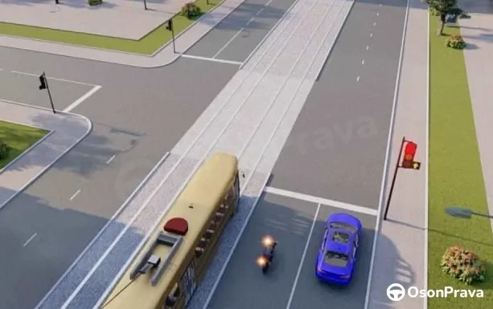
Qaysi transport vositalariga ko'rsatilgan yo'nalishlar bo'yicha harakatlanishga ruxsat etiladi?
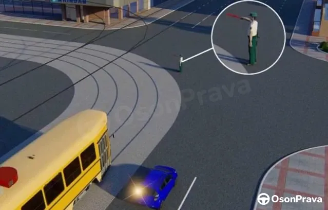
Transport vositalariga qaysi yo'nalish bo'yicha harakatlanishga ruxsat etiladi?

Mazkur svetofor harakatlanishni tartibga solish uchun qo'llaniladi:

Svetoforning bu ishorasida qaysi transport vositasining harakatlanishiga ruxsat etilgan?

Svetoforning ushbu ishorasida qaysi transport vositalariga harakatlanishga ruxsat etilgan?

Harakatlanishga ruxsat etilgan barcha transport vositalari qaysi javobda ko'rsatilgan?

Harakatlanishga ruxsat etilgan barcha transport vositalari qaysi javobda to'g'ri ko'rsatilgan?
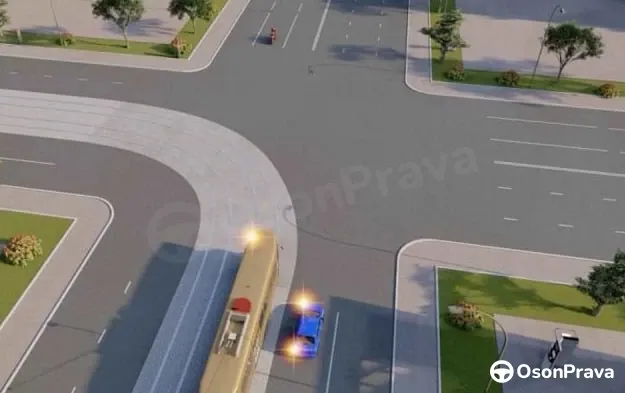
Avtomobil haydovchisi harakatining tartibi qaysi javobda to'g'ri ko'rsatilgan?
Avtomobil haydovchisi qayrilib olmoqchi:
Belgilangan yo'nalishdagi transport vositalariga qaysilar kiradi?
Chorrahani kesib o'tishda tramvay yo'li bo'ylab harakatlanishga ruxsat etiladimi?
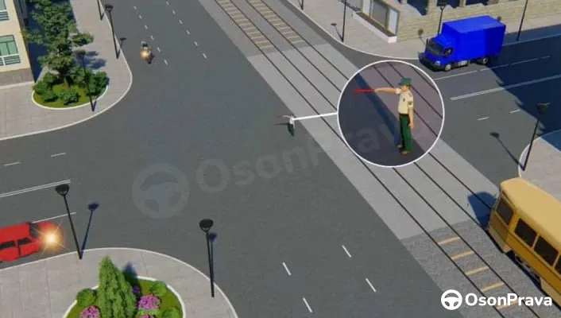
Harakatlanish ruxsat etilgan:
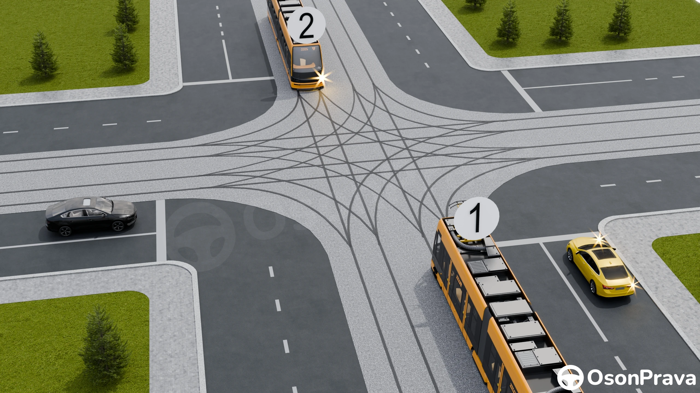
Harakatlanish tartibini ko‘rsating:
Jihozlangan bekatlari bo'lmagan tramvay to'xtash joylarida unga chiqish uchun piyodalarga qachon qatnov qismiga chiqishga ruxsat etiladi?
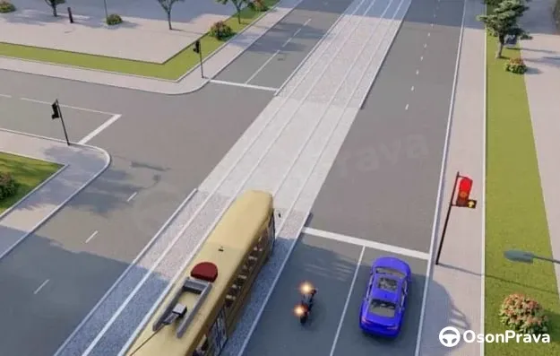
Ko'rsatilgan yo'nalishlar bo'yicha qaysi transport vositalariga harakatlanishga ruxsat etiladi?
Qaysi transport vositalari yo'nalishli transport vositalari hisoblanadi?
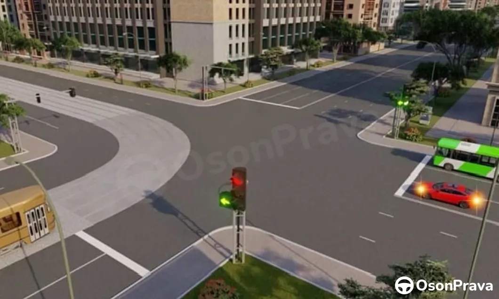
Qaysi transport vositasining haydovchisi chorrahadan birinchi bo'lib o'tadi?

Qizil avtomobilning haydovchisiga tramvay yo'li bo'yicha harakatlanishga ruxsat etiladimi?
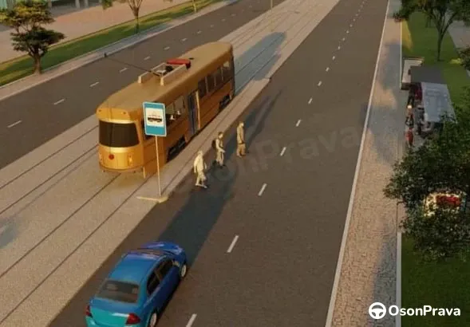
Suratdagi tasvirlangan holatda haydovchi nima qilishi lozim?
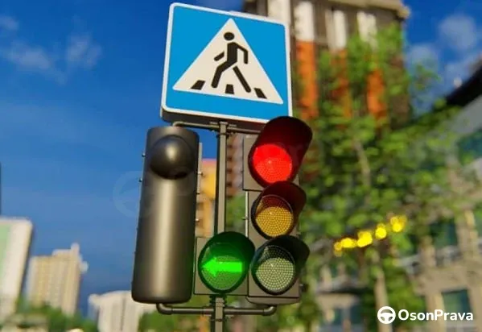
Tramvay haydovchisi harakatlanayotganida svetoforning ushbu ishorasiga muvofiq boshqa yo'nalishlardan harakatlanayotgan transport vositalariga yo'l berishi kerakmi?
Tramvay relssiz transport vositalariga nisbatan imtiyozga ega bulmagan holat:
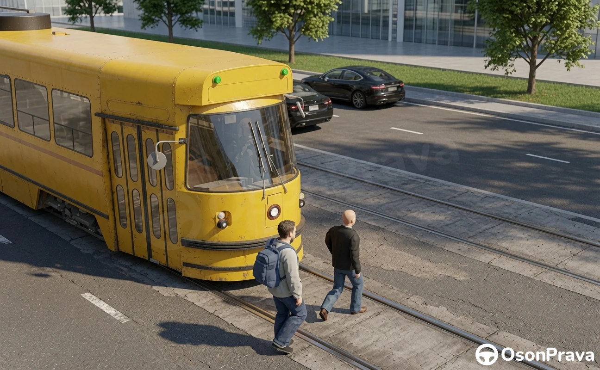
Tramvayni ko'rsatilganidek old qismidan yo'lni kesib o'tishga ruxsat beriladimi?
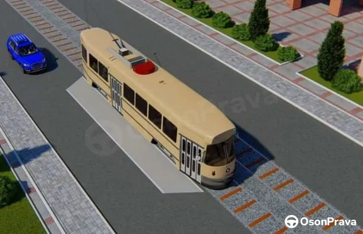